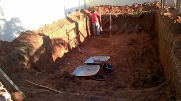
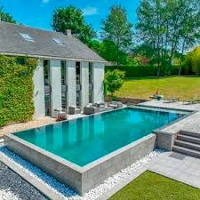
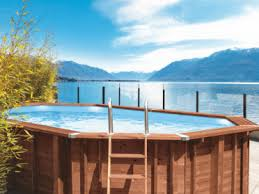

A mais comum de todas. A piscina fica no nível do solo, deixando o ambiente bonito e valorizando o espaço.

Muito usada em terrenos com desnível. Parte da piscina fica enterrada e parte acima do solo.

Mais simples e rápida de instalar. Ideal para quem quer economia e praticidade.